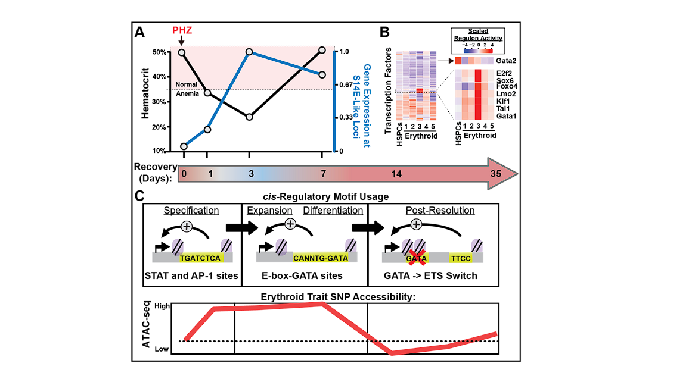
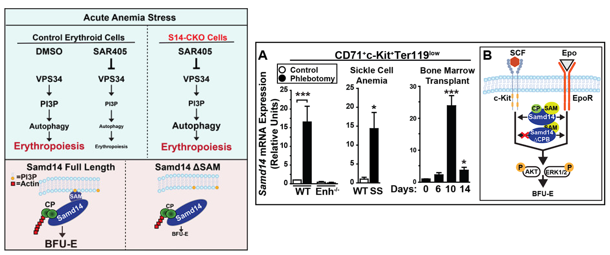
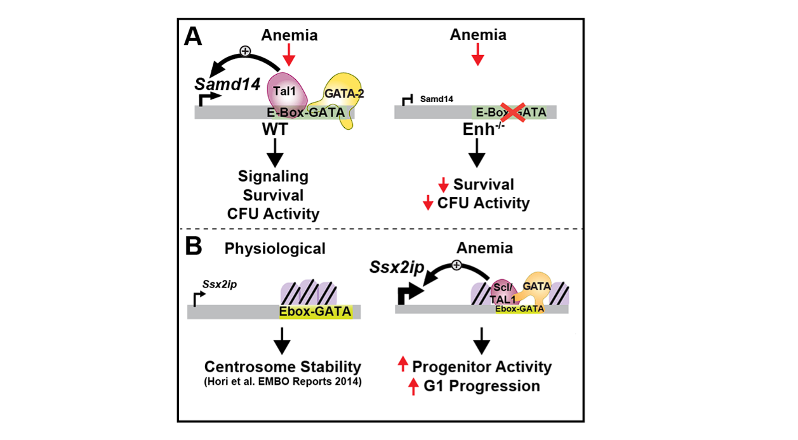

We apply cutting-edge genomic and computational approaches to understand how gene regulation is controlled during the differentiation of all the varied cell types that exist in the blood system.

Acute regeneration of hematopoietic cell types induces big changes to gene transcription. Sub-types of erythroid precursors have unique predicted TF activities that increase in anemia stress. Dozens of genes associated with GATA-occupied enhancers resembling S14E are upregulated in erythroid progenitor cells post-anemia. Molecularly-similar enhancers represent a functional subgroup of cis-elements in a broader erythroid gene network, some of which appear to have polymorphisms linked to erythroid traits in humans.
Anemia stress-dependent transcriptional mechanisms can be used to develop new clinical strategies to regenerate erythroid cells and/or to increase the regenerative capacity of existing populations of human HSPCs, often associated with natural variation in human polymorphisms that may be useful for development of personalized medicine approaches to treating hematologic diseases such as anemia and leukemia.

The Samd14 gene and protein are upregulated in several acute/chronic anemia contexts (Fig 2A), but its precise functional roles are unknown.
We are investigating how Samd14 coordinates cell signaling during the process of anemia recovery through oncogenic cell signaling pathways that drive progenitor activity.

Anemia-activated cis-elements are controlled by GATA factors. During red blood cell regeneration, a Kit+, GATA2-expressing population of self-renewing erythroid-restricted cells rapidly expand and differentiate. The GATA family of transcription factors function to activate/repress complex genetic circuits. A GATA-occupied cis-element at the Samd14 locus (S14E) was required for survival in anemia.
A GATA2-Samd14-Kit axis regulates erythroid regeneration, and SAMD14 dysregulation may have pathogenic consequences. Using the sequence/molecular properties of the S14E anemia-activated enhancer as a guide, we also described similar anemia-dependent enhancer activities at the Ssx2ip locus, encoding a gene upregulated in leukemia and predicted to control centromere assembly.